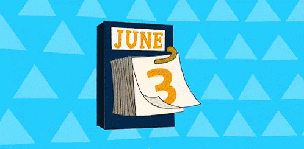

How to be more efficient: Events (time) VS To-Do's (tasks)
Jul 25 '21 • Written by Yassen Shopov
📖 6 minute read
Once you start getting more and more into the realm of productivity, you eventually come to a crossroad:
Should I prioritize my calendar or my to-do list? And how to structure them in such a way that they both work out?
Even if you haven’t reached this point yet, well, welcome, I will make you think about it right now.
Many people tend to do one out of two scenarios when managing tasks. 1. They structure their day by “events” that they have to attend, like classes, lectures, meetings, appointments. 2. They write a list of tasks that they check off one by one as the day goes. Of course, both have their place and time and are needed for a working system to emerge.
In this article, I’ll show you the way I structure my productivity system, which basically boils down to a calendar and a to-do list. I’ll go through the pros and cons of using either one exclusively, and then you’ll see how using them side-to-side is quite a bit more efficient.
Events (Time)
This is probably the way most people are used to structuring their time. It’s no wonder really. Since the 1st grade, we’ve been exposed to a schedule of some sort, and it is only natural that we will continue running a schedule when we have a job or are studying in university.
Many people don’t even recognize that they are using a productivity app, and that is namely Google Calendar, or maybe the default calendar app on your phone. But it is, and it can be quite powerful when used correctly.
Some ways in which the calendar app can be useful are: setting reminders for events, setting up recurring events, managing meetings wuth multiple busy people, and so on.
The only way in which I can see it as a limiting factor is if you don’t go into enough detail.
Guess which event name in Google Calendar is the better one:
Studying
Take notes on chapters 1-3 of Subject X
Of course it’s option 2, even if it takes 5 more seconds to type it out. There are several things that make option 2 the better one, including - using an “action word” (Take notes), being specific, knowing when to start and end the task.
To-do’s (Tasks)
Now this is where it gets a bit tricky. Some people are reluctant to write to-do lists because they don’t want to seem too pompous and pretentious for trying to get their life in order.
Yet, writing a to-do list with literally everything you got going on in your life is proven to cleanse your mind of the negative thoughts that clutter it. Each to-do or task serves as a next stepping stone in your journey. And what is more, it is one more weight off your shoulders, since you don’t need to think about it no more - you simply need to do the task.
The main con with a to-do list is that it can easily become an infinity pool. An infinity pool describes an endless stream of content, in this case, tasks.
Especially if you have the need to finish everything from this to-do list in the same day, before the lock strikes midnight, it can be a real headache. A realistic to-do list offers some wiggle-room, and you can postpone a task for tomorrow.
However, since in the list tasks are written in, well, a list, this can lead to some visual confusions.
All tasks seem equal in weight, which is misleading.
You can have an unrealistic sense oh how much you can achieve in a day
And in order to overome those challenges, I present a solution…
… and that is to add small to-do lists to your calendar events!
What I do is I take my big to-do list for the day/week and put the tasks that are fixed in time as calendar events, and that’s it for them. Then I take the longer ones, and the ones that are not fixed in time and I create events for them as well, in fitting periods of time. And most importantly, I add a smaller to-do list in the harder tasks.
As said, “Write an essay” is not the best title for an event. But a series of tasks, like 1. Write the title 2. Write the abstract, 3. Write some bullet points, can be tons more helpful.
In the end, it’s all about repetition and readjusting your aim, so go ahead and experiment! I’m sure you’ll find your truth somewhere.
[11:48]
by Ali Abdaal